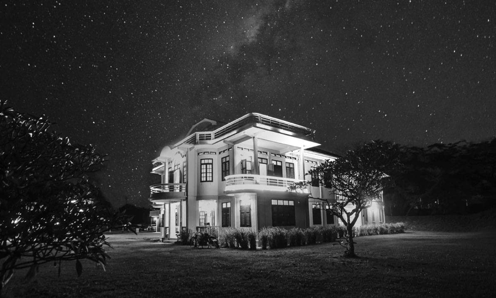

2021 · press · event
A day welcoming Olympic athletes and a customer's charity donation

Original text in Thai
ขอบคุณทุกเหตุการณ์ ความแน่นอนคือความไม่แน่นอน 🙂
เช้าวันนี้ ดีใจที่ได้เป็นส่วนหนึ่ง เลี้ยงต้อนรับ ขอบคุณ #น้องเทนนิส และทีมนักกีฬาโอลิมปิก ที่นำรอยยิ้มกลับมาให้คนไทย ในช่วงเวลายากลำบากเช่นนี้ 😊
บ่ายวันนี้ ลูกค้ากลับมาทานข้าว และนำเงินจากการบริจาคภาพวาดที่ฝึกวาดครั้งแรก! มาร่วมสมทบบริจาค ช่วยเหลือน้องๆ รร.บ้านไม้ขาว และเด็กด้อยโอกาส 😇
เย็นวันนี้ มีโอกาสได้ไปเที่ยวโครงการ TheShore พนักงาน แจ้งว่ามีลูกค้าเข้าพักราว 25% ซึ่งท่ามกลางสถานการณ์เช่นนี้ ก็ถือว่าดีมากแล้วจิงๆ 🙂
เมื่อวานในขณะที่ทีมงาน PhuketSandbox ทำงานกันอย่างหนัก ก็มีคดีสะเทือนขวัญทำลายเครดิตทั้งไทยและภูเก็ต ขอแสดงความเสียใจต่อผู้สูญเสียชีวิต 😔
เมื่อวานเช่นกัน ขอบคุณท้องทะเลที่คืนร่างน้องที่สูญเสียชีวิตจากการจมน้ำกลับมาให้ทางญาติได้ประกอบพิธีทางศาสนา เป็นน้องที่เคยทำร้านร่วมกันมาเกือบปี เพิ่งได้ทักทายกันไปเมื่อไม่ถึงเดือนมานี่เอง ใจหายอ่ะ 😔
เมื่อวานซืน มีโอกาสได้ไปเที่ยว ThePlayyard เป็นที่พักรถบ้านจอดหน้าหาด พร้อมลานปาร์ตี้ และลานสเก็ต สถานที่คือดีมาก ✨ อยู่ห่างจากบ้านอาจ้อไม่ถึง 10 นาที ดีใจมีเพื่อนบ้านใหม่ แถม surprise เจ้าของเป็นหลานเพื่อนอาม่า 😊✨
เมื่อวานซืนเช่นกัน ได้รู้จักที่พักดีๆอีกแห่งในโซนไม้ขาว ที่สำคัญคือ มีอาหารฝรั่งอร่อยๆเสิร์ฟด้วย ถือเป็น oasis ในไม้ขาวอีกแห่งเลย 😆💕
เมื่อ 2 วันที่แล้ว ลูกค้าที่เคยมาทานอาหารที่ร้าน กลายร่างเป็นตากล้องมืออาชีพ มาถ่ายรูปบ้านและอาหารให้ สวยมากจริงๆ 💕✨
สัปดาห์ที่แล้ว ทราบข่าวเฮียที่เป็นผู้แนะนำความรู้เพื่อพัฒนากิจการซักรีดตั้งแต่ช่วงเริ่มต้น ได้เสียชีวิตจาก Covid ด้วยเวลาอันรวดเร็ว แบบไม่ทันเตรียมใจ 😔
คืนนี้แน่นอนแล้วว่านอนดีกว่า พรุ่งนี้ตื่นมาลุยกันต่อ 😊💕
ขอบคุณภาพสวยๆ Many thanks David Van Driessche
#มานอนดูดาวกัน 😊
#บ้านอาจ้อ ❤️